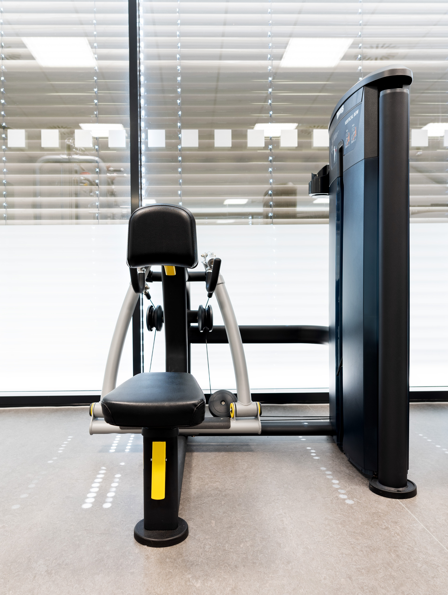
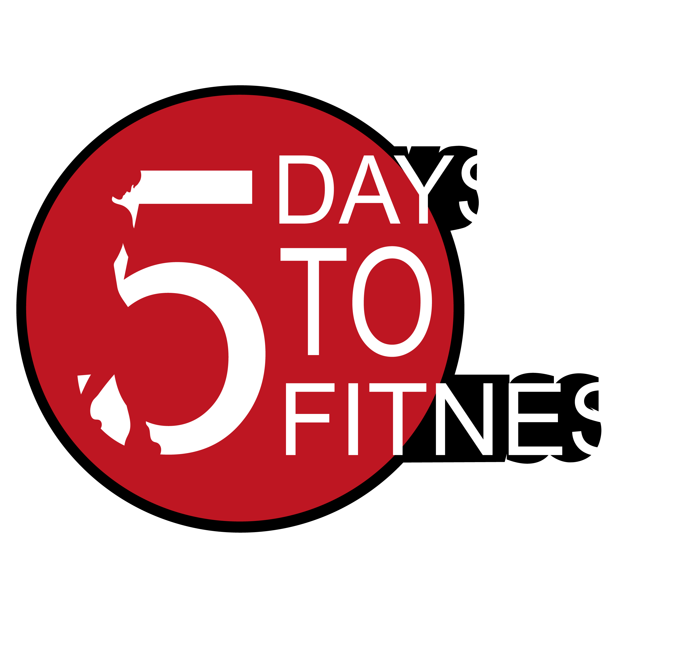

Übungenunser 5Days to Fitnessplan
Rückenstrecker
Die Fußauflage wird so eingestellt, dass das Polster im Oberschenkelbereich abstützt. Die Füße werden an der Ferse durch die Fußpolster eingespannt. Der Rücken ist zunächst durchgestreckt, die Arme vor der Brust verschränkt, der Blick ist nach vorn gerichtet. Bei der Ausführung wird der Oberkörper langsam abgesenkt bis im Hüftgelenk ein 90 Grad Winkel erreicht ist. Dann wird der Oberkörper wieder in die Streckung gebracht. Auf eine Bildung des Hohlkreuzes ist während der gesamten Ausführung zu achten.


×